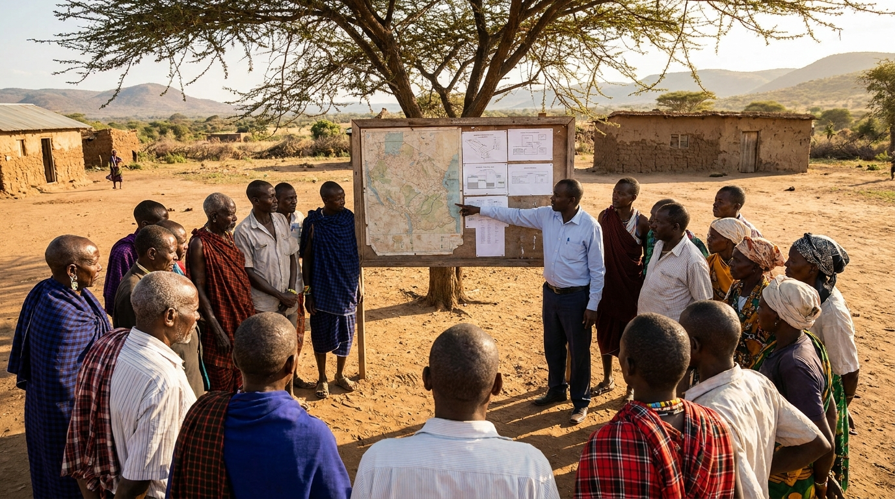

A community consultation beside a public works project in Uganda.
Uganda's public systems for publishing, sustaining, and using infrastructure information sit well above the international average. The largest single gain came in data publication, where more projects are now published across the lifecycle than at baseline.
Dimension breakdown
Each dimension is scored 0 to 100. Uganda is strongest on data publication and has the most room to grow on citizen participation. The gold shape is Uganda; the blue is the international average.
Strongest: Data Publication (78). Weakest: Citizen Participation (63), the dimension to target next.
Dimension values are illustrative for the prototype, pending publication assurance.
Trend
A benchmark is only useful if it moves. Uganda has pulled clear of the international average, year on year.
Trend values are illustrative for the prototype, pending publication assurance.